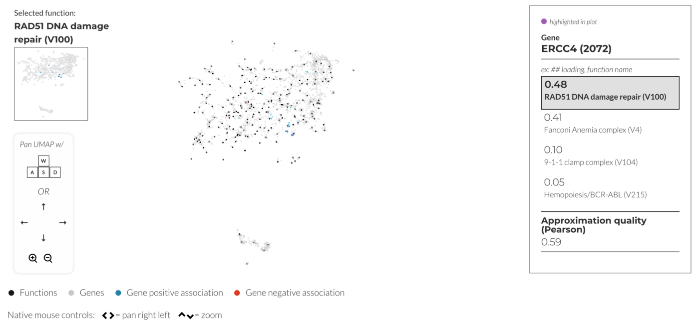
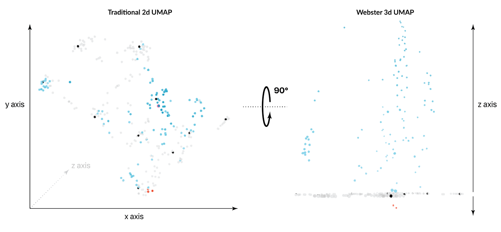
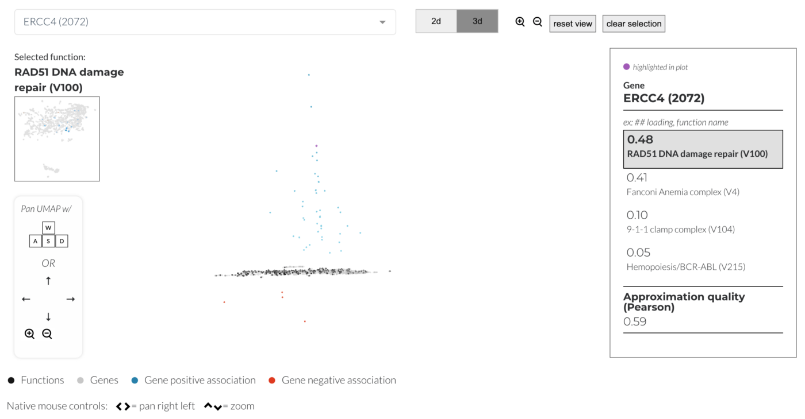

RESPONSIBILITES
Full-stack dev + visualization
ABOUT
The Webster portal is a 3d visualization tool that shows the correlation of certain biological functions to sets of genes.
In an effort to rethink the traditional UMAP embedding, the Pattern team created a new framework for visualizing high dimensional data points in 3d space. Crucially, our approach maintains the contextual information provided by UMAP clustering while adding a new dimension in which to plot additional data points. This new visualization method seeks to add another layer of data to the UMAP layout rather than duplicate its existing components.
You can read more detail about the design of Webster at this blog post.
Go to site